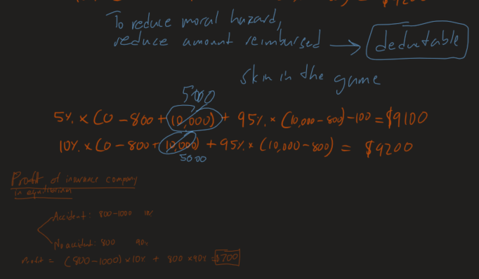
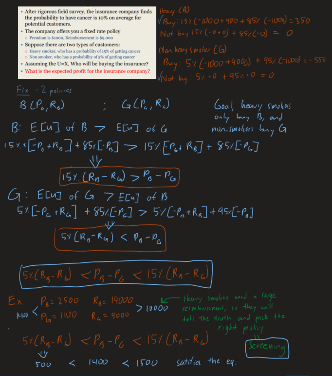
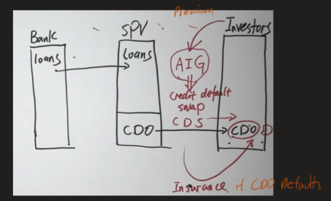

Insurance
First off, please review this diagram of the prisoner's dilemma.

What is insurance?
Insurance companies compensate the policyholders when a pre-specified adverse event occurs. They mostly make their revenue from insurance premiums, and their main cost is insurance payments.
Attitude towards risk
There are three types of risk taking behaviors, risk averse, risk neutral, and risk loving (risk seeking). Would you rather have a 100% chance of getting $100 or have a 50% of getting $200?
Due to human's risk behavior, we cannot use the expected value to represent risk taking. Instead, economists use a utility function.
The only the expected utility can capture the value, not utility of the expected value!
The utility function, determines whether the person is isk averse, risk neutral, or risk loving?

Here is the graph of a risk adverse person.

Here is the graph of a risk loving person.

Guess what type of behavior this is?

Utility functions are estimated by advanced models and historical data.
Why do we buy insurance?
Insurance companies are less ris averse than insurance buyers. They have tools to achieve lower sensitivity such as, hedging, diversification, better modeling, and superior information. More risk averse institutions shift additional risk to less risk averse institutions.
Asymmetric information
Insurance companies will always have less information about the policy buyer than the policy buyer himself.
There are types of asymmetric information problems, moral hazard, and adverse selection.
Moral Hazard
Suppose it costs you $100 (psychologically) to drive safely. This means that texting and driving is worth $100 to you.
- Your car is worth $10,000
- A accident causes your car worth to be $0
- The insurance policy offers a premium of $800, and a reimbursement of $10,000
- If you drive safely, the probability of car accident is 5%
- Otherwise, the probability of a car accident is 10%

When a customer has insurance in this case, they have a financial incentive to get in an accident. This is moral hazard. This is because the reimbursement covers the entire value of the car, so the driver is not liable at all. To fix moral hazard, have the driver pay for part of the car reimbursement by lowering the reimbursement amount.
What about the moral hazard case of a CEO who spends company money to fly to vegas for a weekend? This can be fixed by paying the CEO with stock grants and bonus which are tied to company performance. When the CEO is allowed to bear some of the losses, they have more skin in the game.
A deductible is the amount you have to pay to get reimbursed by an insurance company. This effectively reduces the reimbursement which would also fix the moral hazard problem. Insurance companies will charge you less of a premium with a high deductible because they know there is less of a moral hazard problem.
Adverse Selection
The adverse selection problem is one where different users of insurance have different liabilities, and need to have different insurance policies.
This can be solved by a detailed selection of policy holders, by creating different contracts.
Screening Theory is the process of creating policies that discourage the policy holder from choosing the wrong policy. For example when choosing between flying first class and economy, airlines will make flying economy a very poor experience which encourages the upside of paying for first-class. Another example is when ordering food at Panda Express, and seeing that for paying only a dollar more, you can get another entree and side. Panda Express wants people to spend the extra dollar, but still gives the option for people who can only afford the basic meal.
Insurance and the Financial Crisis
During the financial crisis, insurance companies saw the value of subprime mortgage pools and credit default swaps (CDS) fall in value. AIG (American International Group) was a major writer of these CDS securities. On September 16th, 2008, the federal government bailed out AIG with $85 billion in exchange for 80% of the firm's equity.
AIG's division called AIG Financial Products (AIGFP) created high risk credit default swaps that were at risk of moral hazard and adverse selection problems. The investors who did buy credit default swaps to protect their CDO (collateralized debt obligation) investment had a higher risk of defaulting. Before the financial crisis, this CDO insurance plan was highly successful and had revenues grow from $737 M to over $3 B over 5 years.
As foreclosures rose to incredibly high levels, AIG had to payout to its policy holders. The crash of CDS lowered AIG's credit rating, and caused the firm to post collateral for its bondholders. Many large institutions were at risk of losing billions of dollars because AIG couldn't cover its losses. Goldman Sachs had $20 B tied to AIG's business. In addition, money market funds which are usually very low risk were jeopardized since AIG's bonds were at risk and was becoming insolvent. The Federal Reserve had to step in due to the systemic risk AIG had on the economy and issued a loan for 79.9% of AIG's equity. This was about $85 B at the time, but AIG required more loans over time which brought it's bailout to an estimated $150 B.